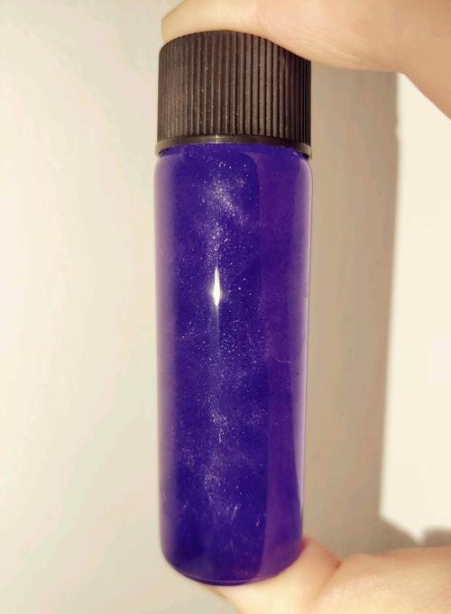

紫晶雨篇

图源：迷路的野指针
🎯 预览
项目概览：
难度等级：★★☆☆☆ (中级)
制备周期：1-2小时
成功率：75%
推荐人群：有一定化学实验基础者
所需材料：
硫酸铜 (CuSO
4
) 5g
乙二胺 (C
2
H
8
N
2
) 3mL 或乙二胺盐酸盐+氢氧化钠
蒸馏水、85-95%乙醇
250mL烧杯、锥形瓶、表面皿
西林瓶/螺口瓶、气泵
电子秤、磁力搅拌器/玻璃棒
一、基础认识
1.1 化学特性
化学式：[Cu(en)
2
]SO
4
·nH
2
O
系统名称
硫酸二(乙二胺)合铜(II)
外观特征
紫色晶体，在溶液中形成紫色悬浮晶雨
配合物类型
铜(II)的乙二胺配合物，形成八面体结构
反应原理
硫酸铜与乙二胺反应生成紫色的乙二胺合铜配合物
1.2 结构特点
配位结构
中心Cu
2+
与2个乙二胺分子配位
每个乙二胺作为双齿配体，提供两个N原子
形成[Cu(en)
2
]
2+
阳离子
晶体特性
紫色晶体，在85-95%乙醇中溶解度显著降低
颜色成因
[Cu(en)
2
]
2+
离子在可见光区有一个较宽的吸收带，中心约在~550 nm（黄绿色）附近
根据补色原理，吸收黄绿色光后，透射和反射光主要为蓝紫色和红色光的混合，因此人眼感知为紫色
二、实验与制备
2.1 实验步骤
💡 紫晶雨制备法
材料：硫酸铜、乙二胺（或乙二胺盐酸盐+氢氧化钠）、蒸馏水、85-95%乙醇、烧杯、西林瓶
步骤一：准备水溶液
量取15mL水于250mL烧杯中备用
使用蒸馏水可减少杂质干扰
步骤二：溶解硫酸铜
称取5g硫酸铜加入烧杯中，搅拌至固体完全溶解
硫酸铜溶液呈蓝色
步骤三：加入乙二胺（方法一）
量取3mL乙二胺快速滴进烧杯中，溶液立刻变紫
重要警告：
无水乙二胺剧烈发烟，操作要迅速！
步骤三：加入乙二胺（方法二-推荐）
用少量乙二胺盐酸盐和等摩尔量氢氧化钠加少量85-95%乙醇反应制成高浓度乙二胺溶液
从该溶液中滴取3-5mL加入烧杯中即可
优势：
此方法更安全，避免了直接使用无水乙二胺的危险性
原理：
乙二胺盐酸盐与氢氧化钠反应生成乙二胺，氯化钠在乙醇中几乎不溶
步骤四：加入乙醇析晶
在剧烈搅拌下向溶液逐滴加入75mL左右85-95%乙醇至紫色晶体基本完全析出
重要：
必须使用85-95%乙醇，不能用无水乙醇
原因：
无水乙醇会夺取配合物的结晶水，导致晶体颜色变浅，晶雨效果消失
乙醇浓度需适中，太稀或太浓都会影响晶雨质量
步骤五：装瓶保存
将溶液倒入西林瓶中，盖紧瓶盖
成品即为"紫晶雨"
步骤六：清理工作
将全部仪器洗净并收好，清理桌面
特别注意含铜废液的处理，必须进行无害化处理
2.2 实验技巧
💡 提高成功率的关键点
乙二胺添加速度
乙二胺应快速加入，避免挥发损失
乙醇浓度控制
必须使用85-95%乙醇
无水乙醇会夺取结晶水，导致浅紫色晶体且晶雨效果消失
乙醇浓度需严格控制，太稀或太浓都会影响晶雨质量
乙醇添加控制
乙醇应逐滴加入并持续搅拌，过快会导致晶体团聚沉淀
温度控制
室温下操作即可，无需额外加热
浓度控制
硫酸铜和乙二胺的比例影响配合物形成，按推荐比例操作
三、安全与注意事项
3.1 管制化学品警告
乙二胺管制：
乙二胺为国家管制危化品试剂，购买和使用需符合相关规定
操作要求：
必须在通风良好的环境中操作，最好在通风橱内进行
发烟特性：
无水乙二胺剧烈发烟，有强烈氨味，对呼吸道有刺激
3.2 重金属安全
铜离子毒性：
Cu²⁺为重金属离子，对人体及生物有害
废液处理：
实验废液必须进行无毒处理后排入生活用水
全程防护：
实验应全程戴好手套，避免皮肤直接接触
3.3 操作安全
个人防护
必须佩戴防护眼镜、实验服、手套和防毒面具（如使用乙二胺）
通风要求
实验必须在通风良好或通风橱内进行，避免吸入有害气体
应急处理
皮肤接触：立即用大量清水冲洗15分钟
眼睛接触：立即用流动清水冲洗15分钟，并立即就医
吸入：立即移至新鲜空气处，必要时就医
误食：立即漱口，饮用牛奶或蛋清，并立即就医
四、成果展示与质量评估
优质紫晶雨特征
优质紫晶雨：
颜色鲜艳，呈深紫色
晶体细小均匀，悬浮性好
溶液澄清，晶体悬浮其中
摇晃后形成美丽雨滴效果
问题紫晶雨：
颜色暗淡或偏浅 - 配位不完全或使用无水乙醇
晶体沉淀 - 乙醇添加过快或过量
溶液浑浊 - 杂质过多或反应不完全
晶体过大 - 结晶速度过快
晶雨效果消失 - 使用无水乙醇导致结晶水被夺取
五、问题诊断与解决
常见问题排查
问题一：晶体不析出或析出量少
可能原因：
乙二胺用量不足、乙醇添加过快、温度过高
解决方案：
确保乙二胺用量足够、缓慢滴加乙醇、室温下操作
问题二：晶体颜色不正（偏蓝或偏浅）
可能原因：
配位不完全、使用无水乙醇、乙二胺挥发损失
解决方案：
确保乙二胺快速加入、使用85-95%乙醇、控制操作条件
问题三：晶体迅速沉淀
可能原因：
乙醇过量、溶液浓度过高、晶体生长过快
解决方案：
控制乙醇添加量、适当稀释溶液、降低结晶速度
问题四：晶雨效果消失
可能原因：
使用无水乙醇夺取了结晶水
解决方案：
必须使用85-95%乙醇，无水乙醇会导致配合物失去结晶水
六、科学原理
6.1 颜色原理详解
吸收光谱
[Cu(en)
2
]
2+
离子在可见光区有一个较宽的吸收带
吸收中心约在550 nm（黄绿色）附近
这是由于Cu
2+
离子在八面体场中的d-d电子跃迁
补色原理
当黄绿色光被吸收后，透射和反射光主要为互补色
黄绿色的互补色为蓝紫色和红色的混合
因此人眼感知为紫色
乙醇浓度影响
85-95%乙醇既能降低配合物溶解度，又能保留结晶水
无水乙醇会夺取结晶水，导致配合物结构改变，颜色变浅且晶雨效果消失
6.2 配位化学原理
配位反应
Cu
2+
+ 2en → [Cu(en)
2
]
2+
乙二胺(en)作为双齿配体，与铜离子形成稳定的螯合物
乙醇的作用
1. 降低水的介电常数，增加离子间静电引力
2. 降低配合物溶解度（相似相溶原理）
3. 促进晶核形成和晶体生长
4.
85-95%乙醇能保留结晶水，无水乙醇会夺取结晶水
七、不推荐的方法
7.1 硫酸与钛反应法（不推荐）
反应原理
Ti + 2H
2
SO
4
→ TiOSO
4
+ SO
2
↑ + 2H
2
O
理论上生成硫酸氧钛，可能呈现紫色
不推荐原因
水解问题：
硫酸氧钛在酸性环境下仍易水解生成偏钛酸
稳定性差：
保存中逐渐失去原有颜色，不再具有晶雨性质
操作危险：
反应剧烈，可能产生有毒气体
推荐替代
使用乙二胺与硫酸铜反应的方法更安全、稳定、可靠
八、应用与展示
8.1 艺术展示
工艺品制作
装瓶后的西林瓶/螺口瓶可作为观赏用的工艺品，具有独特的装饰价值
科学展示
可用于科学展览或教学演示，展示配位化学和颜色原理
摄影素材
紫色晶体在溶液中漂浮的独特视觉效果，是极佳的摄影素材
九、保存与维护
9.1 保存方法
密封保存
使用西林瓶或螺口瓶严格密封，防止挥发和污染
避光存放
避免阳光直射，防止颜色变化或分解
温度稳定
存放在阴凉处，避免剧烈温度变化影响晶体稳定性
定期检查
定期检查晶体状态，如沉淀过多可轻轻摇晃恢复悬浮
本章作者
不会炼金的阿贝少，迷路的野指针
晶体专家
内容导航
基础认识
实验制备
安全事项
质量评估
问题诊断
科学原理
不推荐方法
应用展示
保存维护
返回首页